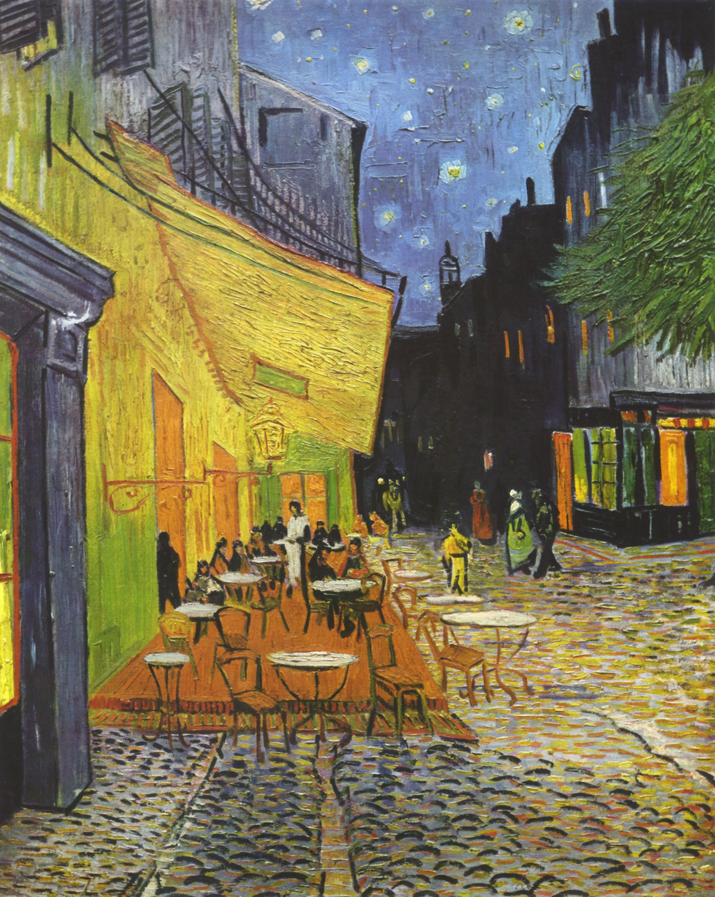

A cobbled street, a café glowing under a gas lamp. The awning blazes a hot, buttery yellow that spills onto the wall and the stones; down the street the sky goes deep blue and — for the first time in his life — Van Gogh paints stars. The quietly radical move: there is not a speck of black anywhere. Night, here, is built entirely from blue, violet and green.
This is a painting that pulls you in by perspective. The seams of the cobblestones, the eaves, the rows of tables all converge down the street toward a dark alley deep in the picture — a clear one-point perspective that gives the street real depth.
The huge golden awning on the left is the lead: a tilted wedge of warmth that is bright, heavy and advancing. Against it, the dark blue buildings on the right sit back and steady the frame — one bright, one dark; one forward, one back, and the scales balance. Foreground tables and silhouettes act as a repoussoir, framing your view into the street; the white-clad waiter at the centre is the brightest vertical, the point all the warm light gathers toward. Stars overhead and the lamp below rhyme across the canvas.
The engine is one complementary pair: blue ↔ orange-yellow. The warm gaslight (an orange family) sits directly opposite the cobalt sky on the colour wheel. Placed side by side, complements trigger simultaneous contrast: the yellow burns hotter for the blue, the blue deepens for the yellow — each ignites the other. This is the colour science Van Gogh absorbed from Chevreul and Charles Blanc, and from his hero Delacroix.
And the key line, from a letter to his sister (paraphrased): “a night painting without any black — nothing but beautiful blue, violet and green.” So look closely: the darks are not black, they are saturated cools — violet-blue in the cobbles, ink-blue down the alley, green in the door and tree. Warm (yellow/orange) covers little but pops most; cool (blue/violet/green) holds the large ground. That is the elegant rule of small warm accent + large cool field: restrained, yet focused.
No moon, no street-lamp close-up — the single source is the gas lamp under the awning. Van Gogh never paints “the light” itself; he dyes it onto whatever it touches: the lit wall is feverish sulphur-yellow, the floor a pale lemon-green, and everything cools toward blue as it leaves the glow. Colour temperature does the work of value — warmth and coolness stand in for light and shadow. That is the painting’s cleverest stroke.
The mood is therefore both warm and vast: human bustle close up, an endless starred sky above. This is the first starry night in Van Gogh’s work — the same month he painted Starry Night Over the Rhône, a full year before the famous The Starry Night. Here the sky is still calm, like a thought just lit.
Oil on canvas, about 80.7 × 65.3 cm, painted September 1888 on the Place du Forum in Arles, southern France. It was made outdoors, at night, on the spot — Van Gogh wrote with delight that he loved “painting the night in the very night.”
The handling is impasto with directional strokes: the cobbles are dragged toward the vanishing point one stroke at a time, while the sky is dotted with separated touches for stars and haloes — an echo of the Neo-Impressionist dot (Seurat), but looser and more impulsive. Mostly pure, ungrayed colours laid side by side, left for the viewer’s eye to mix at a distance — which is exactly why it still glows on a screen.
It moves us because it is so rarely warm. Van Gogh’s pictures often burn with anxiety; this one is relaxed, hospitable, almost happy: tables of people gathered around a lamp, conversation drifting out, the dark tamed into a warm blanket. Tiny lamplight against an enormous night — not tragic, but the temperature of “someone is waiting up for you.” (Some scholars read the white-clad central figure ringed by roughly twelve others as a hidden “Last Supper” — a contested interpretation; Van Gogh himself never described it that way.)
Vincent van Gogh (1853–1890), Dutch. Arles in 1888 was his most prolific, most luminous stretch: he rented the “Yellow House,” dreamed of an artists’ colony, and waited for Gauguin to join him in the south. In roughly fifteen months he made over two hundred works — and sold almost none in his lifetime. The café still trades in Arles today, repainted the same gold and renamed “Café Van Gogh.”